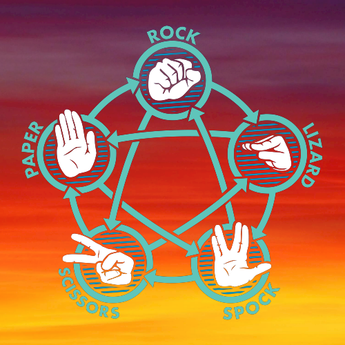
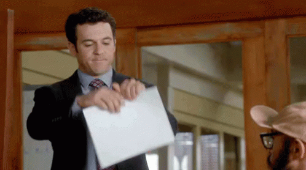

Laws of RPSLSp
Get ready for some epic hand-to-hand combat, folks! It's time to play Rock Paper Scissors Lizard Spock, the game that's so cool, even Sheldon Cooper plays it!
First things first, let's get familiar with the gestures. We've got rock, paper, scissors, lizard, and Spock. Don't worry, you don't have to be an expert in geology, stationary, or zoology to play this game. Just use your hands and hope for the best!
So, what are the rules? Well, it's simple, really:
- Rock crushes Scissors and crushes Lizard.
- Paper covers Rock and disproves Spock.
- Scissors cuts Paper and decapitates Lizard.
- Lizard poisons Spock and eats Paper.
- Spock smashes Scissors and vaporizes Rock.
If both players make the same gesture, then it's a tie. And just like in life, a tie means that nobody wins and everyone is disappointed. So, try to avoid that if you can.
Now, I know what you're thinking. "This sounds like a lot of complicated nonsense. Why bother playing?" Well, my friend, because it's freaking hilarious, that's why! There's nothing quite like seeing your opponent make the gesture for a lizard, only to be decapitated by your scissors. It's the kind of satisfaction that money can't buy... but we'll gladly take your donations anyway.
And for those who don't want to read, here's sheldon explaining it:
So, what are you waiting for? Go find a friend and challenge them to a game of Rock Paper Scissors Lizard Spock! And remember, if you lose, it's not because you're bad at the game. It's because your opponent cheated, obviously.
The Weapons in War...

Not an actual representation of the war!
The RPSLSp game can get way crazier !!!
How it actually is... ↓↓↓
Meet the chioces
Rock
Well, rock in the rock-paper-scissors-lizard game is like that one big, burly friend who always shows up to the party and dominates everyone else. It's like, "Hey, I'm rock, and I'm here to crush all your hopes and dreams." But let's be real, rock's got some serious self-esteem issues. It's always trying to prove itself, like it's compensating for something. "Oh, you think you can beat me? I'm a ROCK, for crying out loud!" But hey, at least it's consistent, right? Always reliable, always there, always ready to smash things. Rock, you may be basic, but we love you anyway.
Paper
Paper, oh sweet sweet paper. The ultimate weapon of choice in the Rock, Paper, Scissors, Lizard, Spock game. With its flat palm and fingers pointing downwards, paper is ready to cover and conquer any challenger. It beats rock, because, let's face it, rocks are no match for paper. And scissors? Child's play, paper will slice through them like butter. But paper isn't invincible, no no no, it can be defeated by scissors, and even worse, by a ravenous lizard. And as for Spock, well paper can wrap itself around him and suffocate him into submission. So, if you ever find yourself in a battle of wits and reflexes, remember, paper is mightier than the rock, but be careful not to underestimate the power of a hungry lizard.
Scissors
Ah, the mighty scissors, the symbol of precision and cutting-edge technology in the game of Rock, Paper, Scissors, Lizard, Spock. With its two blades held high, scissors are ready to slice through anything that stands in their way. They conquer paper with ease, for what chance does a flat piece of paper have against the sharp blades of scissors? And rock, oh poor rock, it stands no chance against the power of the scissors. But scissors shouldn't get too cocky, for they can be defeated by the mighty rock and the venomous lizard. And as for Spock, well, the scissors can try to cut through his pointy ears, but it's unlikely to have any effect. So, if you find yourself in a game of Rock, Paper, Scissors, Lizard, Spock, remember, scissors may be sharp, but they're not invincible.
Lizard
The lizard, the unsung hero of Rock, Paper, Scissors, Lizard, Spock. With its reptilian skin and serpentine tail, the lizard may not seem like a formidable foe, but beware. The lizard can devour paper with ease, leaving nothing but scraps behind. And when it comes to rock, the lizard can scamper over it with its nimble movements. But don't get too confident, for the sharp blades of scissors can slice through the lizard's scaly exterior, and Spock's formidable Vulcan grip can crush the lizard's dreams of victory. So, if you find yourself in a game of wits and reflexes against a lizard, keep your eyes peeled and your reflexes sharp, for the lizard is a worthy opponent that should not be underestimated.
Spock
Spock, the calculating strategist in the game of Rock, Paper, Scissors, Lizard, Spock. With his distinctive features and exceptional intelligence, Spock is a formidable opponent. Paper may try to wrap itself around Spock, but his logical mind can easily unravel any such attempts. Even rock can be conquered by Spock's ability to analyze and strategize. However, Spock is not impervious, as the nimble lizard can easily slip away from his grasp, and the sharp blades of scissors can cut through his defenses. So, if you find yourself facing off against Spock, don't let his impressive intellect intimidate you. Keep your reflexes sharp and stay one step ahead of his calculated moves, and you may just emerge victorious.